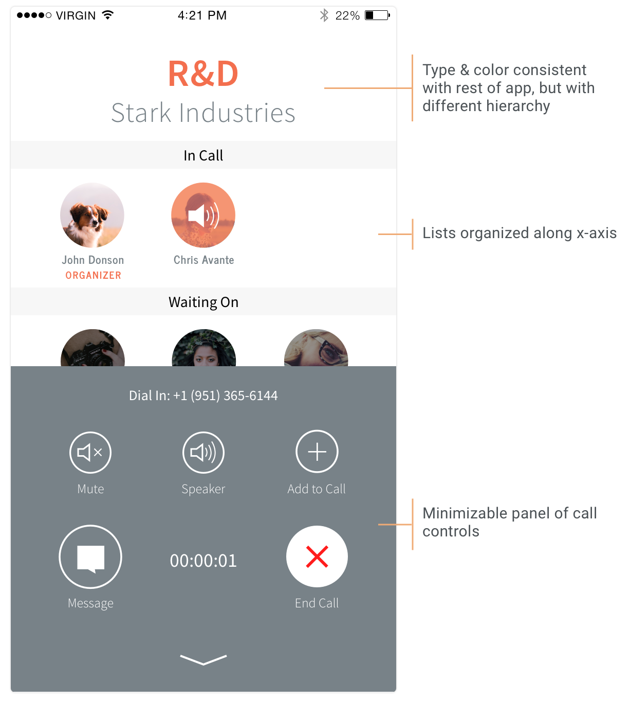

Conference Calls
Company
Clementine, a conference call and messaging app for enterprise. Acquired by Dropbox in 2015.
Role & Responsibilities
As one of two UI/UX designers, I designed the mobile conference call experience with the goal of reassuring customers that their calls were being made with their Clementine number and not their personal number.
An additional requirement for the project was to make the UI scalable for additional call features we had on the product roadmap, including call transferring and conference rescheduling.

The Problem
Many customers who had experimented with other conference call apps before were used to apps that dial a conference line using the customer’s personal phone number. However, one of our core features was giving customers their own business line through the app to keep their work and personal lives separate.
Prior to the redesign, Clementine’s conference call screen looked too similar to the iOS phone UI. Through customer feedback and testing, we found that they weren’t always sure if calls were being made through the app or through their own phone number.
Customer Personas
Through interviews with current and potential customers, we developed three personas based on user roles and motivations in Clementine:

The Employee
Typically a salesperson, the employee spends much of their day on phone calls and messaging through a private business line to get their job done.

The Chief Information / Compliance Officer
The CIO/CCO’s responsibility is approving an app that meets their company’s compliance, security, and archiving standards.

The IT Admin
The IT Admin is all about efficiency and ensuring business products can used in conjunction at their company. Their focus is on directory integration, app flexibility, and accounting.
While it was valuable to design for the needs of the CIO/COO and IT Admin personas in other areas of the app, the Employee would be the one spending the most amount of time making conference calls.
This meant that the conference call experience had to be as straightforward as possible for someone making sensitive calls to many different people every day. It would be important for the app to give clear feedback about what was happening during a call.
Competitive Research
I looked mainly at enterprise telephony apps to get a sense of how they handle multi-person phone calls and what they’re still lacking. I also considered consumer-focused communication apps that have a larger pool of customers.
General trends I found were that
- Many apps limit tasks you can perform when you’re in a call and don’t let you return to the normal app UI.
- Few apps show who’s in a call and who isn’t.
- Ways in which you start a conference call vary, but the majority of apps require you to start from a preexisting group, not by selecting people individually.


Sketching
I sketched out a few ideas to get high-level feedback from the team. Questions I mulled over during sketching were:
- Which call functionalities should be top-level during a call, and which can be hidden?
- Do customers need to be able to see who’s on a call at all times, or is communicating through voice sufficient?
- How do we strike a balance between making the call experience a cohesive part of the whole product and differentiating it enough from the rest of the app so customers know for sure when they’re in a call?


Wireframes
Starting the project, the top priority goal was branding our conference call experience. It was a change our customers were clamoring for and needed to be pushed out in an immediate release.
For wireframes, I focused first on the conference call screen. Since we wanted the screen to be Clementine-branded, I kept to our color and type guidelines and explored different hierarchies for call information and controls.
I also explored options for emphasizing and hiding different call controls (e.g., end call, mute, speaker). At the wireframing stage, what we knew for sure was that people found it most important to know who they were on a call with. Until further user research and testing, I had little information about what controls people found most important to see during a call.


After iterating and critique with the team, I landed on three key features of the conference call screen:

- The conference call screen would use style guidelines consistent with the rest of the app, but with different hierarchy, especially in typography and color.
- Information would be organized primarily by the x-axis to optimize the amount of information on-screen. In the rest of the app, information is organized vertically, but using a horizontal structure here would give more space to present vital information, such as participants and call controls.
- Call controls would be kept from obstructing the view of as many participants as possible.
Prototyping & User Testing
To put our new conference call experience in the hands of users, I built interactive prototypes to simulate how call controls appear in a call. I wanted to find out what people need to see most during a call: the list of participants or call controls. The prototype had the screen split 50/50.

I also built prototypes to simulate different ways of adding more features to the call. This was an exploratory exercise and would be important for the next version of the feature. One of my prototypes (below) expanded actions from the user avatar.
Since the conference call experience is such a core part of the Clementine product, it was especially important that we get feedback from our customers and new users. We sought out test users who worked in target industries (finance, healthcare, etc.) and made frequent work calls.
User testing and interviews clarified a great deal about people’s habits and preferences during a conference call. Chiefly, what people consider most important during a call is knowing who’s already joined the call and who they’re waiting on. Another key insight was that people wanted the call control panel to be as simple as possible: the mute, speaker, and end call functions should always be clear and easily accessible.

The original design with a 50/50 split between call controls and the participant list wouldn’t cut it for our customers. The final design needed more real estate for the participant list and greater clarity for call controls.
The Redesigned Conference Call
The final conference call design incorporated much of the information the Clementine team and our customers found to be key to a successful call experience:
- Attention-grabbing, branded incoming/outgoing call screens (top left), so customers know without a doubt when they’re making Clementine calls
- Call controls that are clear and easy to access
- Information about who’s on a call that can be seen at a glance
- UI patterns consistent with the rest of the app, but presented with enough contrast to differentiate the experience
- A seamless experience from the start of a call to its finish. This means that customers can initiate a call within most contexts in the app, whether from a chat thread, group, or call history.
- The design also incorporated elements of other ongoing projects at Clementine, including our new icon set and universal navigation menu (below). This new menu allowed for greater flexibility for future feature development in calls, as well as elsewhere in the product.